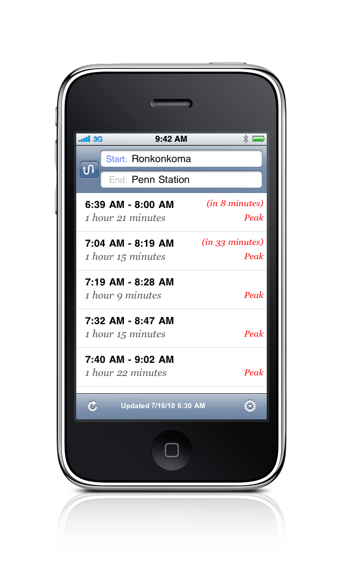

<div id="wrapperbody">
<div id="main">
  <table width="850" border="0" align="center" cellpadding="0" cellspacing="0">
    <tr>
      <td width="56%" align="left" valign="top"><p class="heading">RideJumper</p>
			<p class="maintxt">Made by commuters for commuters!</p>
			<p class="maintxt">From living on Long Island with daily commute to the NYC or going Hampthons occasionally we all have those little LIRR schedules (green, purple, orange, red etc). They easily get lost inside the bags and became outdated when you mostly need them. Finally it is a chance to forget all of that.</p>
			<p class="maintxt">Now you can get your trip scheduled in seconds. No Internet connection required, all data is right on your device. Features a user option to start with nearest station or last stored choice. Get the time for the next scheduled train or details for a selected trip. This new application gives you the ability to tell your friends when you will be at a selected stop.</p>
			<p class="maintxt">Application covers all LIRR branches.</p>
			<p class="maintxt">You will never miss a train again!</p>
			<p class="maintxt"><a href="javascript:onLIRRDetails();">READ MORE</a></p>
			<a href="http://itunes.com/apps/ridejumperlirr"> </a>
			<p class="maintxt">&nbsp;</p>
		<td width="44%" align="center" valign="top">
			
		</td>
    </tr>
  </table>
</div>
</div>
